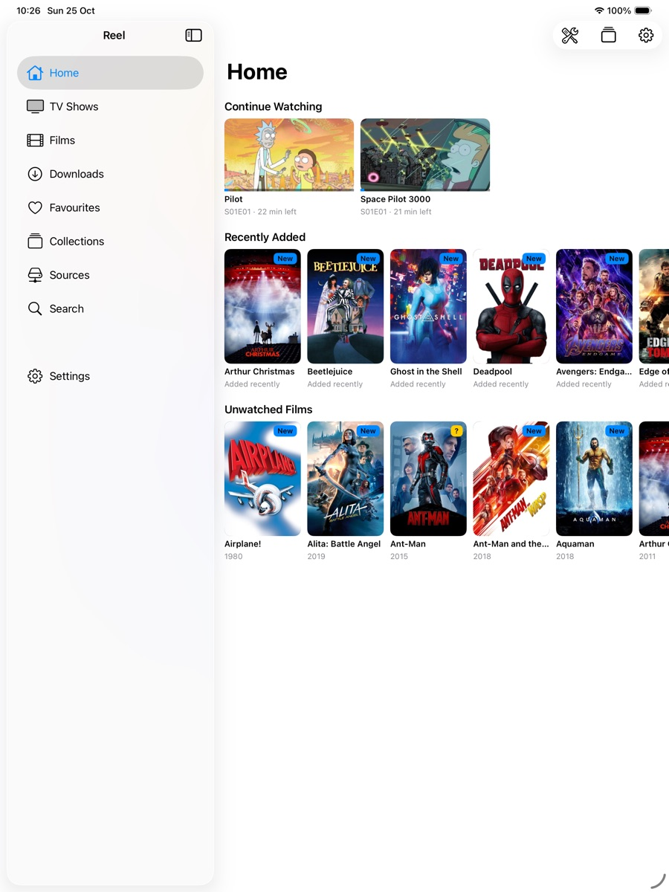
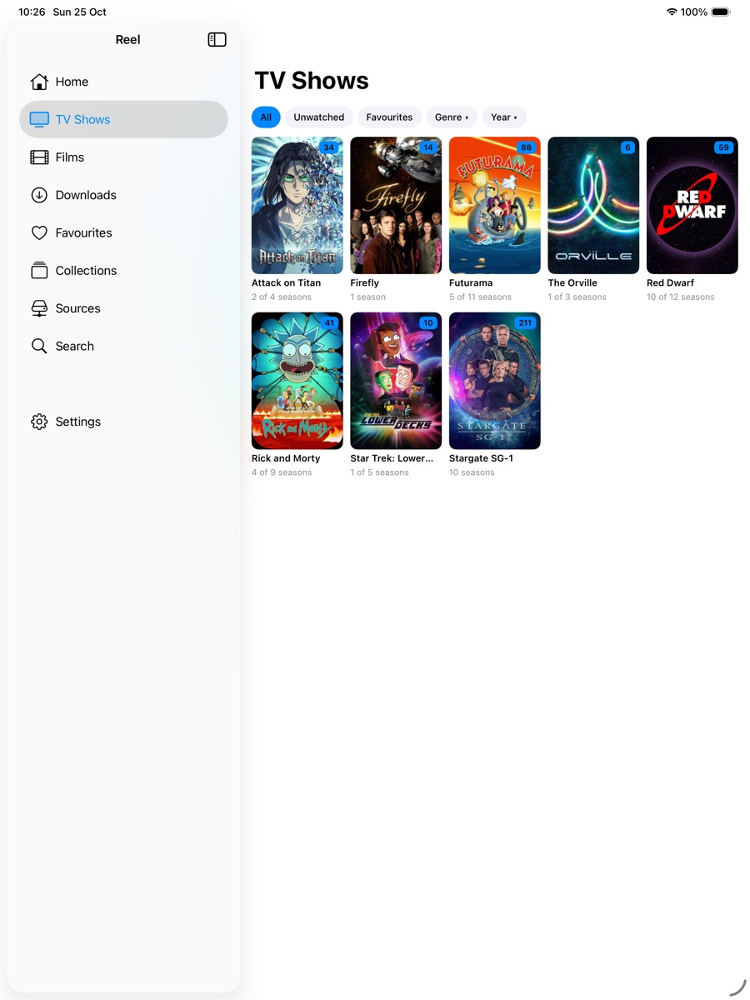
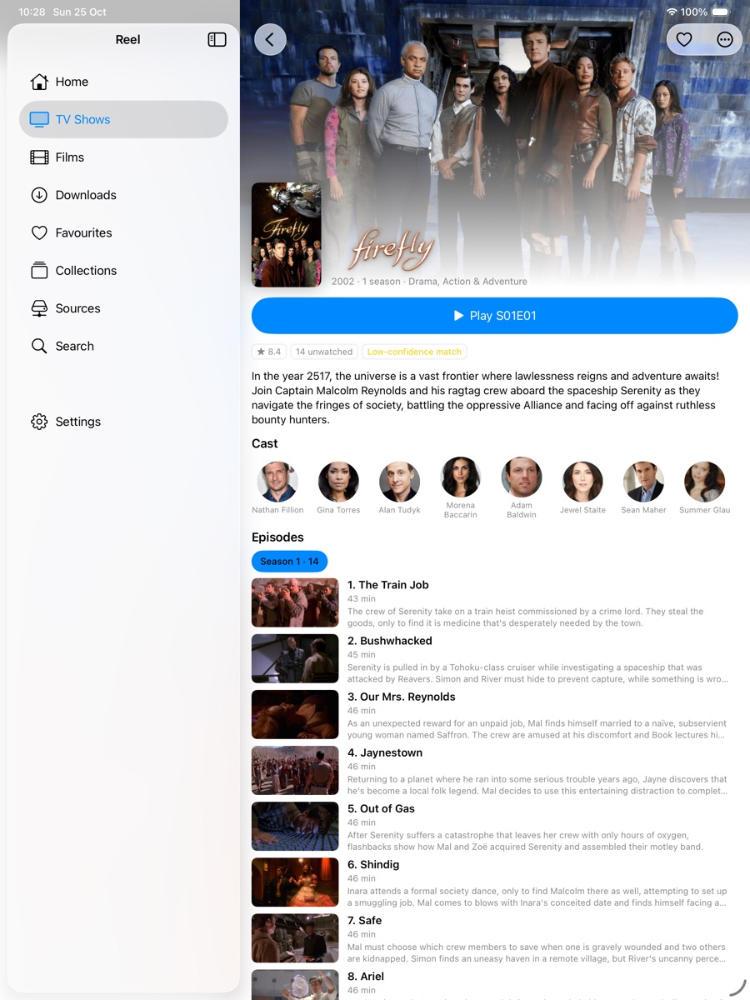
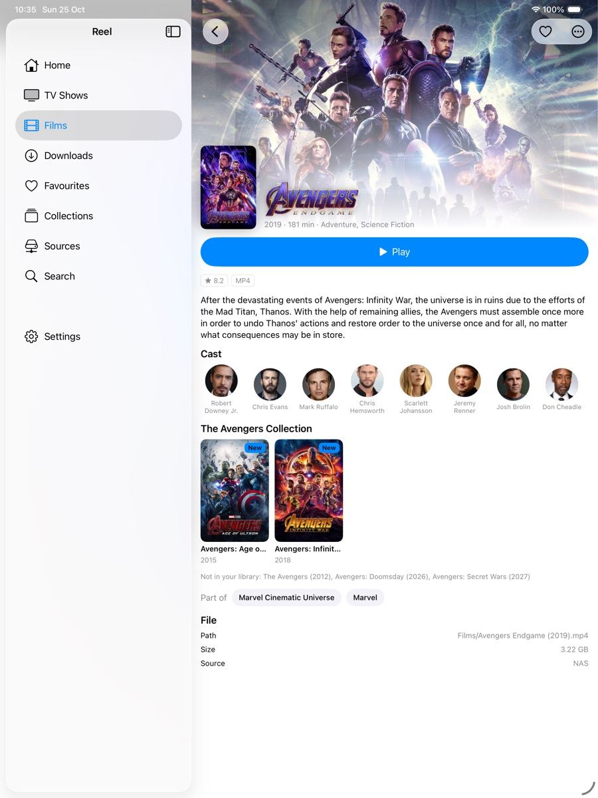
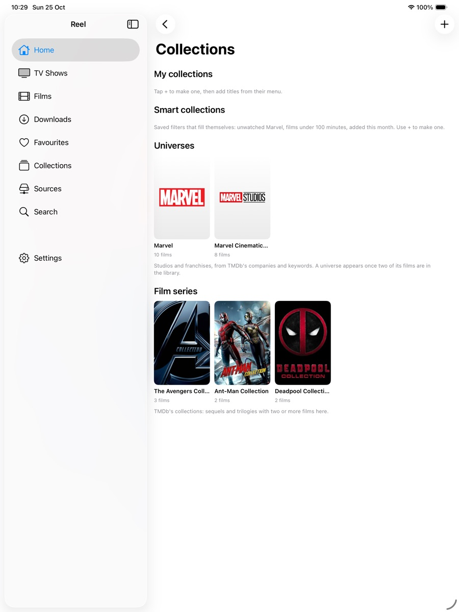
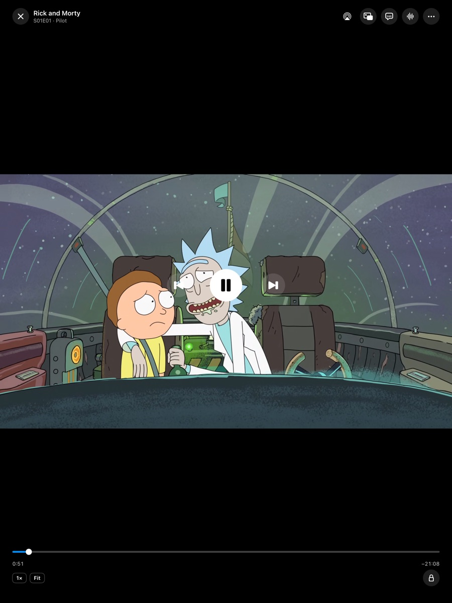
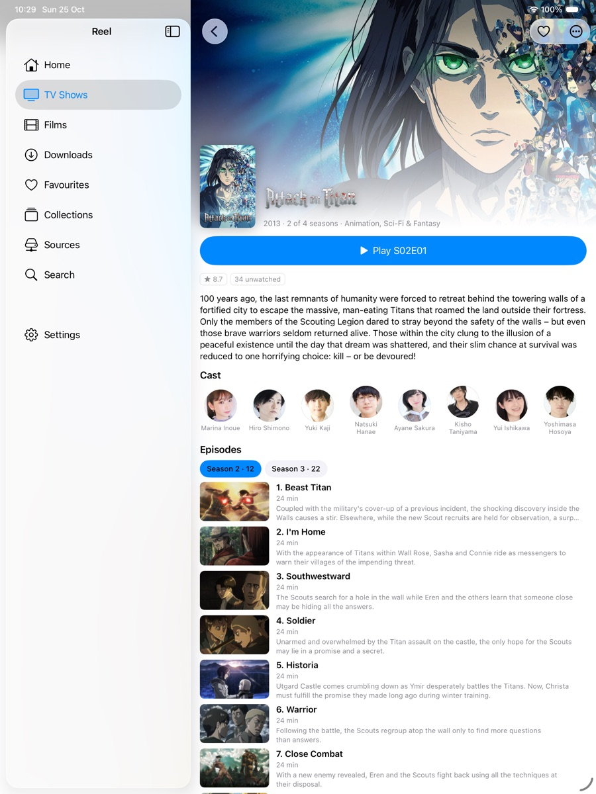
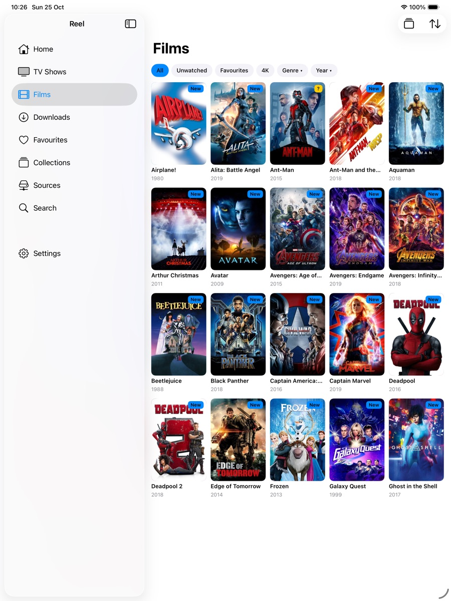

Every file.
Every screen.
Reel is a media player for iPhone and iPad that plays your own video files, straight from a NAS share or the device, and sorts them into TV shows and films with artwork. There is no account, no server to install and nothing is uploaded.
Plays almost anything
MKV, MP4, AVI, WebM and more, with HEVC, 10-bit, Dolby and DTS audio, embedded and external subtitles.
Straight from your NAS
SMB and WebDAV shares, or folders on the device. Wake-on-LAN for a NAS that sleeps.
A real library
Titles, posters, episode names and cast from TMDb. Continue watching, next up, collections and universes.
Made for watching
Skip intro, live scrub previews, auto-play next, sleep timer, dialogue boost, Picture in Picture, AirPlay.
Picks up where you left off
Progress, favourites and fixes sync between your devices through iCloud. Nothing goes anywhere else.
Offline
Download episodes or films to the device for the flight.
Screenshots
The library shown is a sample of a real NAS, matched and decorated by Reel. Tap any picture for full size.


















Try it without a server
The first screen offers a sample library: three short films and a show built into the app, so you can see how it works before adding a share.
Metadata
Titles, artwork and episode details come from The Movie Database (TMDB). This product uses the TMDB API but is not endorsed or certified by TMDB. Optional extras come from fanart.tv, TheTVDB, OpenSubtitles, AniDB and Anime-Lists. See the data providers section for details.